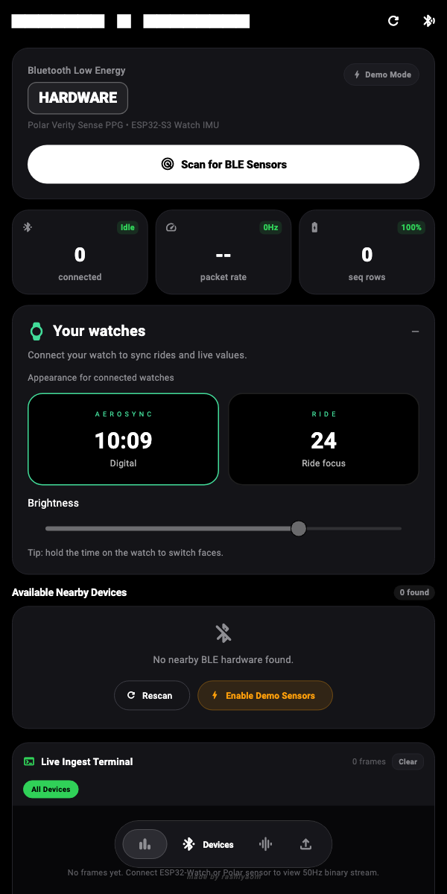
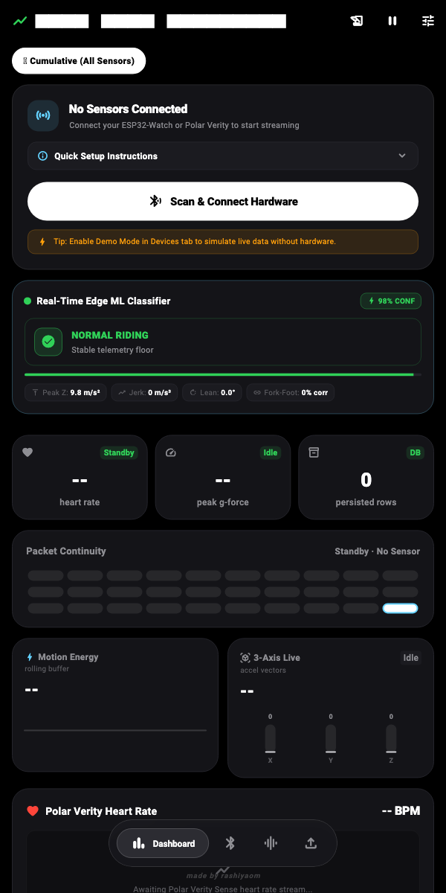
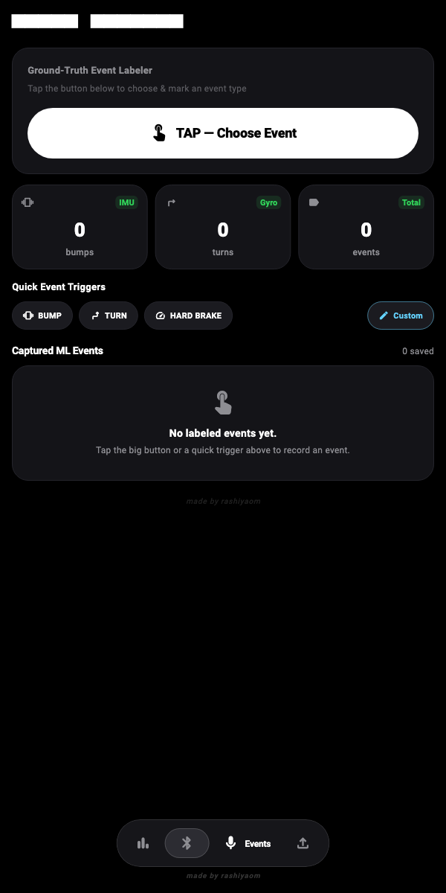
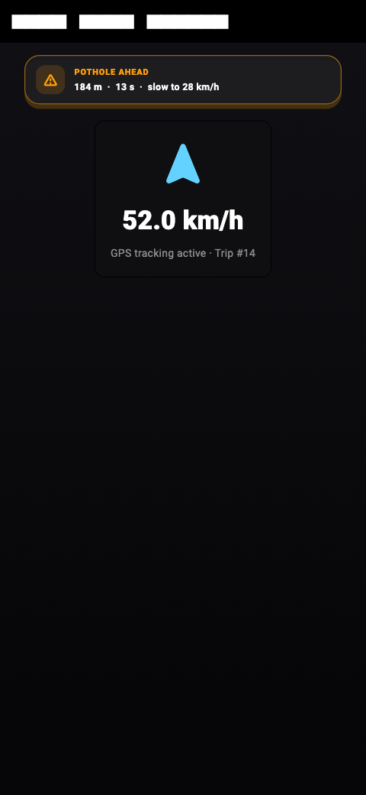
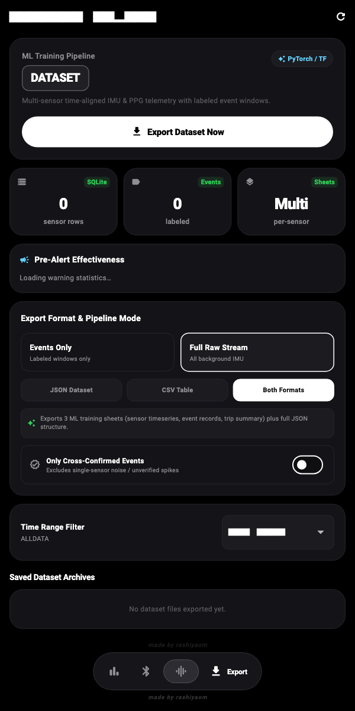

Abstract. Ride Sensor Capture is a Flutter-based research application that synchronizes vehicle dynamics, rider physiology, GPS, and edge-camera detections into a single time-aligned dataset. It connects ESP32-S3 wearable IMUs and Polar Verity Sense sensors over BLE, records trips and event windows, extracts physics and machine-learning features, classifies live riding events, learns geo-tagged hazards, warns the rider before repeat encounters, gathers post-event feedback, and exports reproducible JSON/CSV research artifacts. This report documents the complete implemented feature set, system architecture, algorithms, data schema, user interfaces, verification evidence, and current scientific limitations.
The platform targets a practical gap in two-wheeler research: synchronized acquisition of road excitation, vehicle motion, rider response, context, and human ground truth without a laboratory data logger. A journey is treated as the primary experimental unit. During an active journey, BLE packets, GPS fixes, event labels, camera detections, derived parameters, warnings, and rider feedback share UTC timestamps and trip/event identifiers. This permits both live safety behavior and later supervised-learning analysis.
| Subsystem | Implemented capability | Research value |
|---|---|---|
| Acquisition | Concurrent BLE discovery/connection, ESP32 3/6-axis frames, Polar HR/RR and PMD acceleration, GPS route fixes, HTTP camera events, demo sources. | Multimodal evidence under a common trip timeline. |
| Reliability | Reconnect backoff, packet-gap health, sequence continuity, write buffering, WAL, session alerts, battery status, permission banner. | Captures provenance and quality threats during field trials. |
| Ground truth | Tap, quick-trigger, continuous voice command, and watch-button event control; automatic 60 s cap; event-bound sensor association. | Low-interruption annotation during riding. |
| Signal analysis | Unit normalization, calibration/noise estimation, zero-phase filters, jerk, lean, g-force, cross-sensor lag/correlation, HR-response gate, FFT/statistical windows. | Produces interpretable physics and tabular ML features. |
| Live inference | Five anomaly classes plus normal riding, evaluated every 200 ms on a 75-sample buffer; confidence and explanatory features displayed live. | Immediate event screening at the edge. |
| Safety loop | Persistent road-event registry, heading/radius filtering, time-to-event warning, TTS, speed advice, warning log, contextual feedback, Groq/offline scoring. | Links detection, intervention, and outcome assessment. |
| Dataset delivery | Raw time series, events, trips, pre-alerts, effectiveness, windowed features, nested JSON, Markdown report, and baseline Python trainer. | Shortens the path from ride collection to model experiment. |
0e174bd.The BLE parser recognizes service FFE0 and characteristic FFE1. It accepts ASCII CSV plus 12, 16, 19–23, 24, 28, and 32-byte binary frames. The V2 frame carries timestamp, sequence, role, six float channels, and battery data; role byte 1 maps to fork and 2 to footboard. Legacy accelerometer values within a plausible ±8 g range are normalized to m/s². Non-finite or malformed frames are dropped.
Standard Heart Rate service 180D/2A37 supports 8/16-bit BPM and RR/PPI conversion from 1/1024 s units to milliseconds. Polar PMD data fb005c82… yields signed 16-bit XYZ acceleration converted from mg using 0.00981 m/s² per mg. The app requests and visualizes heart rate, PPI, and motion streams.
Navigation-quality GPS fixes provide latitude, longitude, altitude, speed, heading, and accuracy. The app derives speed variance, acceleration, overspeed state, route distance, and route history. An embedded Shelf HTTP server listens on port 8765: POST /camera-event validates device, class, confidence, timestamp, and bounding box; GET /health reports liveness. Detections are linked to an active event or to a completed event within ±10 s.

| Modality | Primary stored fields |
|---|---|
| IMU | XYZ acceleration, XYZ gyroscope, device/mount, sequence, raw payload |
| Physiology | BPM, PPI, device source, timestamps |
| GPS | Coordinates, speed, heading, altitude, accuracy |
| Vision | Class, confidence, camera/receive time, bounding box, event link |

The dashboard combines an analog/digital GPS speedometer, live route map, journey start/stop, sample-rate selector, multi-axis waveforms, 3-axis bars, g-force/jerk/lean metrics, packet-continuity grid, database row counts, battery/session-health banners, Polar heart-rate view, active pre-alert banner, and access to the journey log. UI telemetry is throttled to protect rendering while ingestion continues at sensor rate.
| Stage | Implementation |
|---|---|
| Normalization | Acceleration in m/s²; angular helpers enforce rad/s↔deg/s consistency; gravity constant 9.80665 m/s². |
| Calibration | Per-trip, per-mount idle calibration estimates engine-noise frequency/amplitude and validity. |
| Filtering | Zero-phase second-order Butterworth: 3 Hz low-pass for maneuver/lean channels and 0.4 Hz high-pass for bump transients; optional adaptive notch only when engine noise is >5 Hz and below Nyquist; reflection padding reduces edge artifacts. |
| Impact | 3-point magnitude smoothing, peak g, peak-to-peak change, acceleration delta, short-window RMS, and unattenuated 3-axis jerk. |
| Turning | Complementary roll estimate (gyro integration + accelerometer roll, α=0.98), peak lateral acceleration, duration, and GPS heading change. |
| Validation | Fork/footboard peak agreement: bump window ±300 ms with ≥1.25 g on both sensors; turn/brake window ±1000 ms with ≥2 m/s² lateral/longitudinal response. |
| Physiology | 60 s pre-event median HR baseline; 5 s response window; ≥8 BPM rise marks physiological confirmation. |
A 75-sample (1.5 s at 50 Hz) fork buffer, optional synchronized footboard buffer, and 200 ms evaluation cadence produce a six-state output. Features include vertical maximum, peak-to-peak range, standard deviation, peak jerk, roll, longitudinal acceleration, yaw rate, and fork/footboard correlation.
Confidence is a bounded monotonic function of threshold exceedance and the interface exposes both confidence and a natural-language explanation. The offline feature exporter separately forms 1.5 s windows with 0.5 s stride, statistical/FFT/vector features, dual-watch cross-correlation, labels, and deterministic 70/15/15 train/validation/test partitions.
Starting a journey creates a trip row, opens GPS tracking, activates high-frequency persistence, synchronizes the watch, clears session counters, starts health monitoring, and arms predictive alerts. During the ride, route points and telemetry update distance, duration, average/peak speed, event count, sensor-row count, physiology, and behavior aggregates. Ending a journey flushes pending packets, stops tracking, computes final statistics, closes the pre-alert session, and makes the trip available in the Journey Log Book.
Each active window receives an event ID before incoming sensor rows are written. On stop, ingestion detaches from the event, buffered rows are flushed, start/end GPS is captured, physics parameters are computed, the trip event count is updated, and the state briefly reports “saved.” A 60 s timer prevents indefinitely open windows; serialized controller operations protect rapid consecutive labels.
| Label | Parameters and decision thresholds |
|---|---|
| Bump | Peak acceleration/g-force, Δa, peak-to-peak, duration, peak jerk, baseline noise. Moderate at ≥1.4 g or ≥22 m/s³; severe at ≥2.2 g or ≥45 m/s³, with calibration-adaptive g limits. |
| Turn | Peak lateral acceleration, complementary-filter lean, duration, direction/heading. Medium at ≥2.5 m/s² or ≥14°; sharp at ≥5 m/s² or ≥28°. |
| Speed/brake | Peak/average speed where present, longitudinal acceleration/deceleration, jerk, duration, and braking classification. |
| Evidence flags | Cross-confirmed state, fork–footboard lag, HR spike, HR delta, GPS speed/heading change, calibration validity, engine-noise frequency. |
The event history shows type, time, classification, peak metric, and feedback badge. Detail views expose the full computed-parameter JSON, GPS coordinates with external map launch, and device/mount-selectable XYZ traces downsampled to at most 150 points for display. Trips support route maps, BLE quality summaries, per-journey export, notes, deletion, and pruning of unlabeled telemetry after export.
tripId and eventId; labels therefore remain joinable to raw samples, GPS, camera evidence, pre-alerts, feedback, and trip-level covariates.

Confirmed live-inference anomalies and completed labeled events create road_events rows with type, coordinate, severity, confidence, source, trip, speed, timestamp, counts, and notes. At 1 Hz GPS cadence the service queries a bounding box, applies exact haversine range, rejects speeds below 8 or above 160 km/h, ignores hazards outside 800 m, removes hazards behind the rider when heading is known (±70° forward cone), and ranks remaining candidates by arrival time.
Target pass speed interpolates between 55 km/h for a mild event and 25 km/h for a severe one, constrained by a 1.2 s reaction budget and 3.5 m/s² comfortable deceleration. The message builder produces concise speech; the dashboard mirrors it visually. Issued warnings are attributed to the active trip, persisted before later evaluation, deduplicated per hazard, and protected by a two-minute re-alert cooldown.
After an event is saved, the app links the most recent warning within ten minutes and asks a type-specific question: bump/pothole smoothness, turn difficulty, or generic navigation difficulty. Riders may use one-tap replies, typed text, one-shot dictation, or skip. The raw response is stored before analysis.
The evaluator requests structured JSON from Groq (openai/gpt-oss-120b by default) and records warning effectiveness [0–1], timing adequacy, difficulty, summary, improvement suggestion, confidence, model provenance, and timestamps. Network/auth/rate/format failure falls back to a deterministic keyword-and-telemetry heuristic so the capture workflow remains functional without cloud access.
The report builder joins alerts and feedback, then aggregates total/evaluated alerts, mean effectiveness, mean lead time, mean warning distance, timing distribution, per-event-type counts/effectiveness, and actionable insights. Results appear in the Export screen, JSON top-level pre_alert_effectiveness, CSV, and a Markdown report.
SQLite runs in write-ahead logging mode. The repository buffers incoming packets and commits at 250 ms intervals or 25 rows, reducing per-packet transaction overhead while retaining an explicit flush at lifecycle boundaries. UTC timestamps, sequence numbers, mount roles, device identity, trip IDs, and event IDs preserve alignment and provenance.
| Table | Purpose and key content |
|---|---|
sensor_readings | Device/type/mount, sequence, UTC, modality, trip/event, HR/PPI, 6-axis IMU, GPS speed, raw payload. |
trips | Rider/wrist, temporal bounds, route, distance/speed, event/row counts, behavior counts, HR, night %, driver score, notes. |
location_readings | Trip-linked UTC coordinate, altitude, speed, heading, accuracy. |
event_records | Label window, trigger, GPS endpoints, status, computed JSON, peak/class, cross/HR/jerk/GPS evidence. |
camera_detections | Device, class/confidence, camera/receive timestamps, bounding box, linked event. |
trip_calibrations | Trip/mount engine-noise frequency, amplitude, time, validity. |
road_events | Geo-tagged hazard type, severity/confidence/source, detection context, alert/feedback counts. |
pre_alerts | Hazard/trip/event, kinematics, TTE, advised speed, urgency, exact speech, acknowledgement. |
event_feedbacks | Prompt/response/source plus LLM/heuristic effectiveness, timing, difficulty, summary and recommendation. |
The researcher chooses events-only or full raw stream, JSON/CSV/both, time range, and optional cross-confirmed-only filtering. Export version 2.1 produces:
sensor_timeseries_export.csv with nearest/forward-filled GPS; event_records_export.csv; trip_summary_export.csv.features_windowed_session.csv containing statistical, FFT, orientation, vector, correlation, physiology, label ID, evidence flags, and split membership.pre_alerts_export.csv, alert_effectiveness_export.csv, and alert_effectiveness_report.md.train_baseline.py script for a scikit-learn RandomForest baseline, enabling a first reproducible classifier experiment directly from the export.
| Verification area | Representative assertions exercised |
|---|---|
| Protocol and ingestion | ESP32 frame variants/units/corrupt data; BLE demo streams and reliability; watch protocol and bidirectional lifecycle; Polar parsing; GPS association; camera persistence/linking. |
| Storage and lifecycle | Batch repository behavior; trip create/start/end aggregates; event serialization under rapid commands; database joins; deletion/pruning paths. |
| Signal and analytics | Filter behavior, g/rad unit consistency, jerk, lean fusion, FFT features, window labeling/splits, cross-correlation, idle calibration, HR gate, live anomaly rules. |
| Alert and feedback | Geodesy, time-to-event/window/urgency/speed advice, heading filtering, deduplication, audit/event linking, warning UI, contextual feedback, Groq request/JSON/error paths, offline heuristics, report aggregates. |
| Export and presentation | CSV/JSON schemas, camera bounding boxes, pre-alert/effectiveness files, baseline trainer, speedometer/map/widgets, complete feature validation, and app navigation smoke test. |
✓ Static analysis: flutter analyze completed with “No issues found.” ✓ Tests: flutter test completed with “All tests passed” at 224 checks. ✓ Cloud path: a live sample was analyzed successfully by the configured Groq model and returned structured, LLM-marked feedback. ✓ Android artifact: universal APK (arm64-v8a, armeabi-v7a, x86_64), package com.example.ride_sensor_capture, min API 24, target API 36; APK Signature Scheme v2 verified.
Evidence method. Figures 1–6 were rendered from the repository’s actual Flutter widgets at a fixed phone/tablet viewport using production theme components and real Material/Roboto fonts. They are not artist-generated interface mockups. Source review and verification were performed on 21 October 2026.